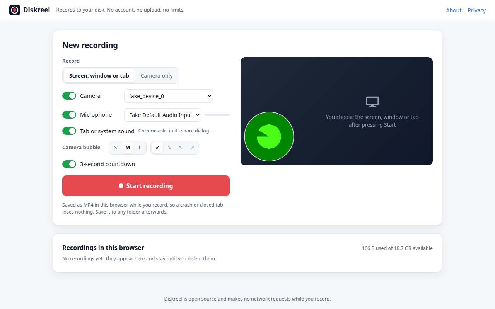

Record your screen. Keep the MP4 on your disk.
Screen, window or tab, with a webcam bubble and your microphone. No account, no upload, no watermark and no time limit. It all runs in your browser.
Works in Chrome, Edge, Brave and Opera on Windows, macOS, Linux and ChromeOS.

Everything a quick recording needs
Bug reports, lessons, walkthroughs and video answers, without signing up for anything.
MP4 that opens anywhere
Recordings are H.264 MP4 files, ready for Google Classroom, Canvas, Slack, YouTube or any editor. WebM is one click away if you need it.
Webcam bubble
Your camera in a round bubble on top of the screen, in any corner, in three sizes. Or record the camera on its own.
Mic and tab sound
Pick your microphone, watch its level, and include the sound of a tab or the whole computer.
Nothing leaves your computer
No account and no upload. The recording is written to your browser's private storage as you record, then saved to any folder you choose.
Crash-safe
The file is written while you record, not held in memory. A crashed or closed tab keeps everything up to the last few seconds.
Trim in seconds
Cut the start and end before saving. Trimming copies the video instead of re-encoding it, so even an hour-long recording saves quickly.
Free means free
Popular recorders limit their free plans. For example, Loom's free plan stops at 5 minutes per video and 25 videos (Loom's own FAQ). Diskreel has no plans to limit.
| Diskreel | |
|---|---|
| Recording length | Unlimited (only your disk space) |
| Number of recordings | Unlimited |
| Watermark | Never |
| Account or email | Not needed |
| Where the video goes | Your disk only |
| File format | MP4 (H.264), or WebM |
How it works
Three steps, about ten seconds.
- Choose your setupTurn the camera and microphone on or off and pick a bubble corner.
- Press StartYour browser asks which screen, window or tab to share. Pause and resume as often as you like.
- Trim and saveCut the ends, then save the MP4 to any folder. It also stays in the recorder until you delete it.
Chrome and Edge extension
The extension is the same recorder, one click (or Alt+Shift+R) away, and it needs no permissions. The store listing is on its way; until then you can install it yourself:
- Downloaddiskreel-extension.zip, then unzip it.
- Open extensionsGo to
chrome://extensions(oredge://extensions) and switch on Developer mode. - Load itClick "Load unpacked" and choose the unzipped folder. Pin Diskreel to the toolbar.
Questions
Is it really free, with no limits?
Yes. There is no account, no length or count limit and no watermark. The recorder runs on your computer, so it costs nothing to run, and there is nothing to limit.
Where are my recordings stored?
While you record, the video is written to your browser's private storage for this site (or the extension). It stays there, listed under "Recordings in this browser", until you delete it. Press Save to write a copy to any folder on your disk.
Does it upload anything?
No. Diskreel has no server. The page and the extension make no network requests while recording or saving. The source code is public, so anyone can check.
Which browsers work?
Chrome, Edge, Brave, Opera, Vivaldi and other Chromium browsers, version 116 or newer, on a computer. Firefox and Safari lack the video encoding APIs Diskreel uses. Phones cannot share their screen with a web page.
Why MP4 and not WebM?
Many upload forms, learning platforms and editors reject WebM. Diskreel encodes H.264 video. Sound is AAC where your browser can encode it, and Opus otherwise (for example on Linux). Both play in common players and browsers.
Can I record system sound?
Tab sound works everywhere. Whole-screen sound works on Windows and ChromeOS. Tick "Share system audio" or "Share tab audio" in the browser's share dialog.
What happens if the browser crashes?
The recording is written in pieces every few seconds, so the next time you open Diskreel it is in the list, playable up to the moment of the crash.